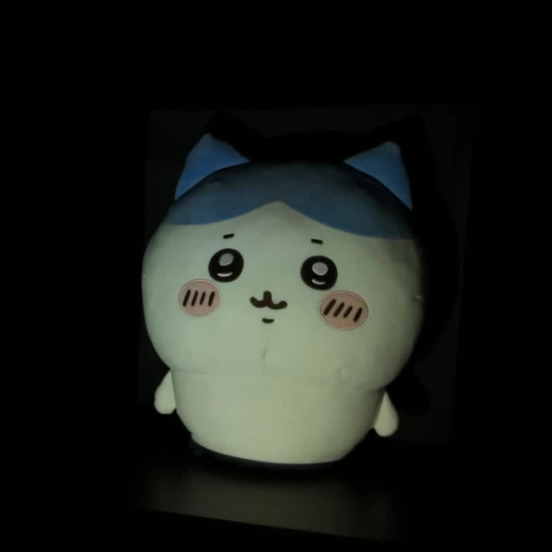
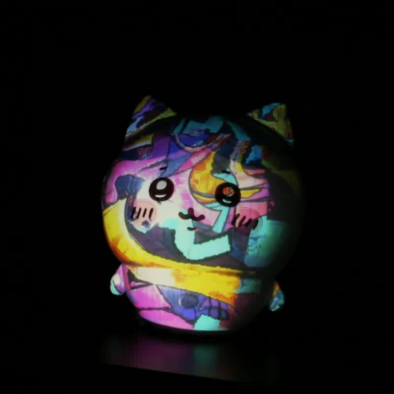
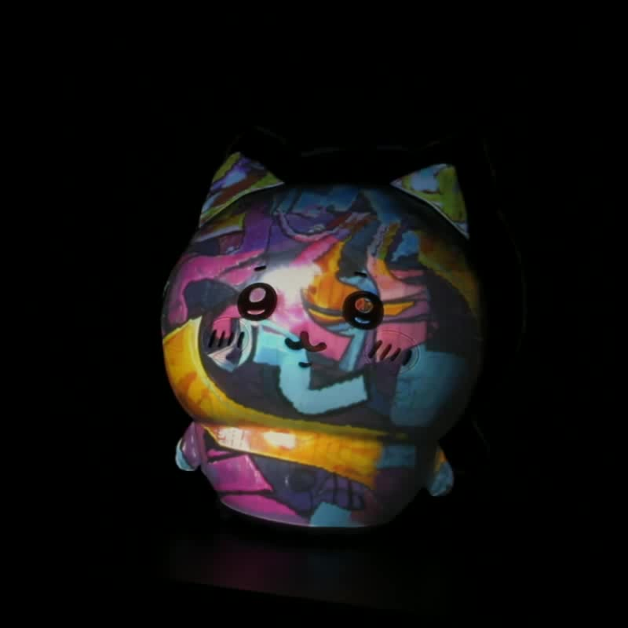
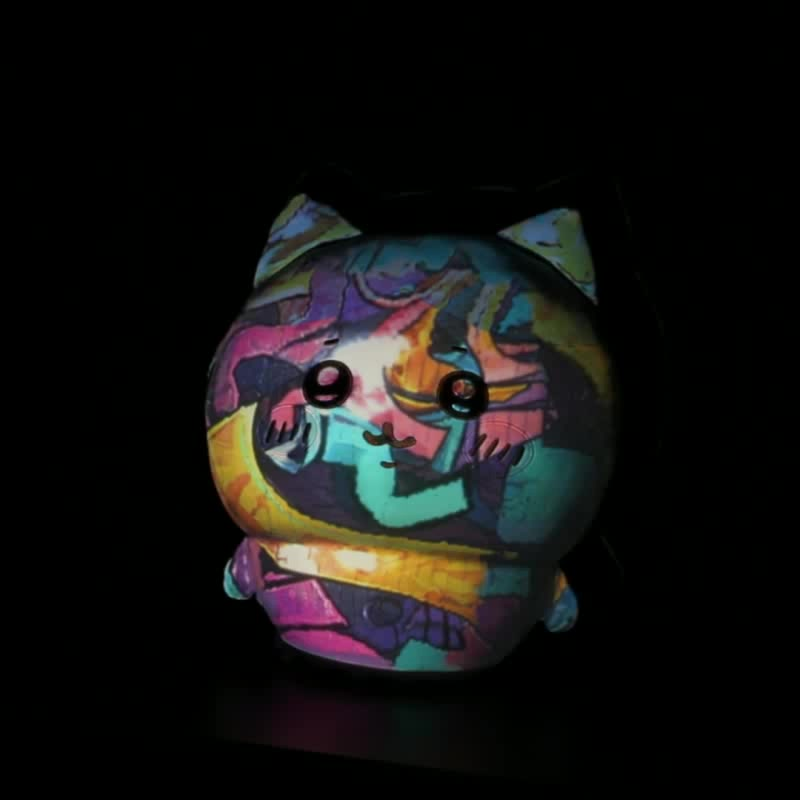
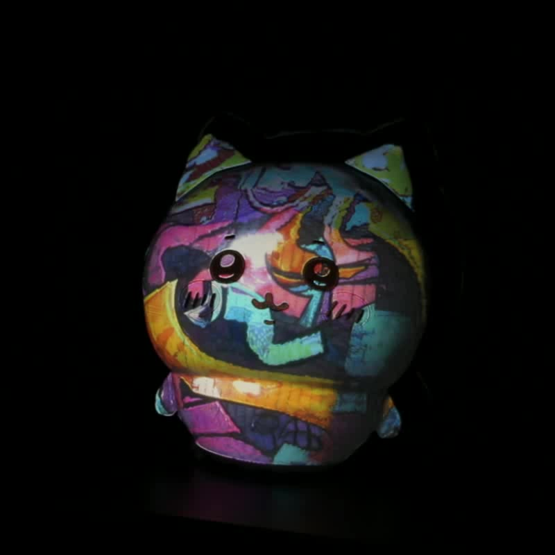
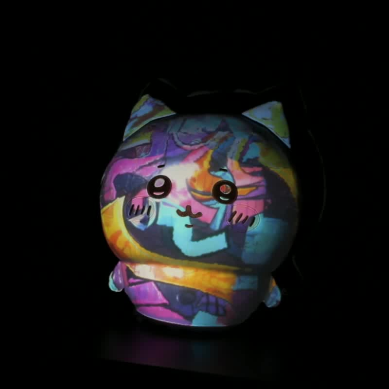

Full projector compensation adjusts a projector’s input image to compensate for both geometric and photometric distortions introduced by the projection surface. Existing methods generally treat the viewing condition as a static camera viewpoint. When applied to a moving viewer, existing methods face two key challenges: (1) view-dependent methods require model retraining or recalibration to compensate for novel viewpoints; and (2) NeRF/GS-based view-agnostic methods use structure from motion (SfM) to calibrate the projector-camera systems (ProCams) with an unknown global scale, while view-aware tracking requires calibrating a camera oriented opposite to the projector, which introduces an additional calibration challenge. To address these challenges, we introduce VAComp, the first view-aware framework for full projector compensation for a moving viewer in a naked-eye setting. Using a projector, VAComp enables the viewer to perceive a virtual object that visually replaces the real object or to observe view-consistent modifications of the real object’s appearance and material properties. To resolve the SfM scale ambiguity, we use metric calibration as a reference to recover the global scale; to calibrate the oppositely facing camera, we use two checkerboards, one facing the RGB camera and the other facing the camera to assist with calibration. To balance compensation quality and runtime efficiency, we develop two non-iterative hybrid methods, VAComp-SD and VAComp-SI. Both combine 2D Gaussian-based view-conditioned geometric correction with learned photometric compensation, predicting each compensation image through a single forward pass without per-frame iterative optimization. Real-world experiments show that both methods achieve competitive compensation quality, with VAComp-SD sustaining real-time updates and VAComp-SI operating at interactive rates.
Try to move your pointer to compare details.Click an image to lock the zoom position; click again to resume.
Try to drag the slider to explore viewing positions.






@misc{Zhou2026VAComp,
title={VAComp: View-Aware Full Projector Compensation},
author={Kai Zhou and Qingyue Deng and Bingyao Huang},
year={2026},
eprint={2611.10637},
archivePrefix={arXiv},
primaryClass={cs.CV},
url={https://arxiv.org/abs/2611.10637},
}